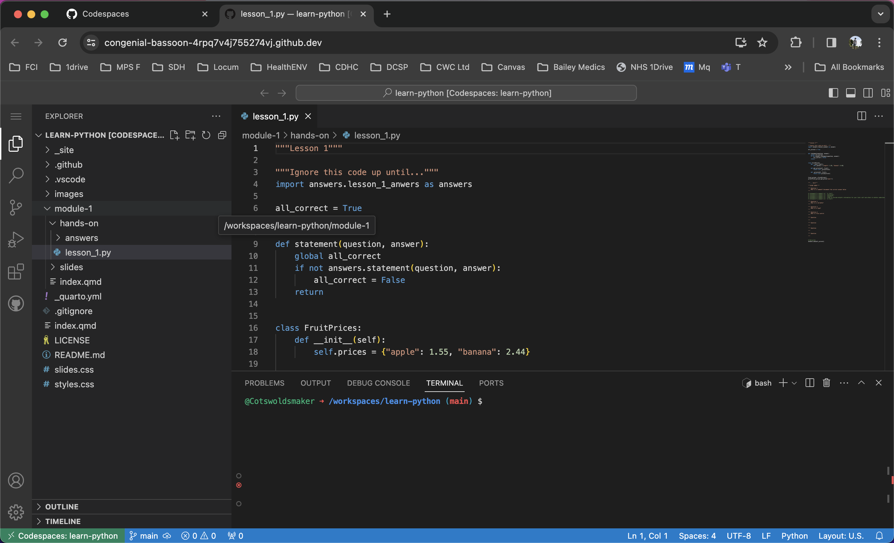
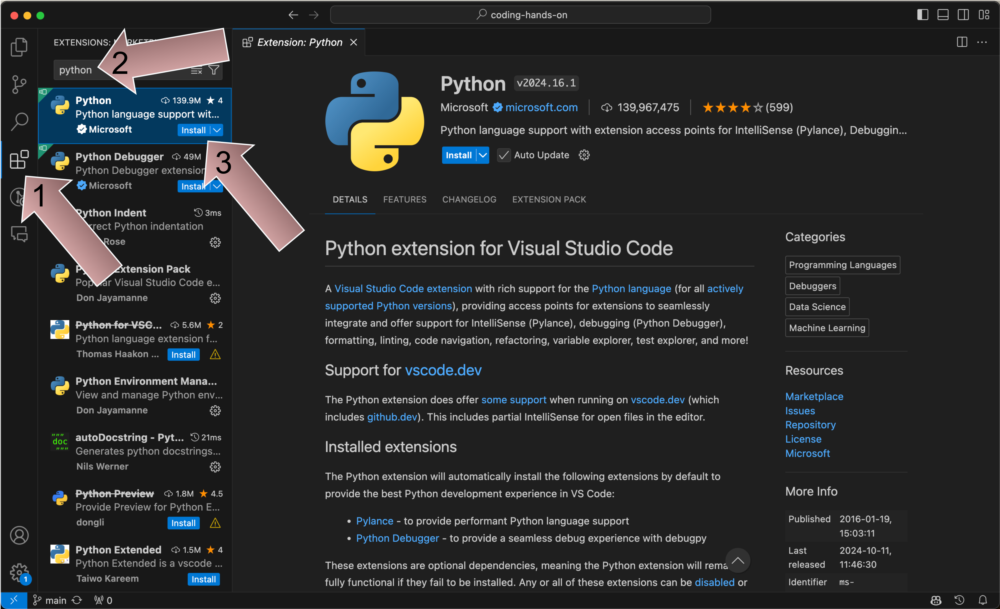

Jupyter Notebook and Markdown
Let’s Do Digital Team
Jupyter Notebook
What is Jupyter Notebook?
- Jupyter Notebook is an interactive tool for writing and running code.
- Used mostly for Python but supports other languages.
- Combines code, text, and visualizations in one place.
Why Use Jupyter Notebook?
- Great for learning, experimenting, and prototyping.
- Interactive: Run code and see results step by step.
- Easy to combine code with explanations and visuals.
- Ideal for data analysis, machine learning, and teaching.
What does Jupiter Notebook look like?
Jupyter Notebook Interface
However…
- We are going to use
Codespacewith theJupyter extension.
Codespace and Jupyter
Key Features of Jupyter Notebook
Write and execute code in cells
Mix code, explanations, images, and graphs
Visualise data
Share work with others
- Share via GitHub.
- Share via Google Colab.
- PDF, HTML, or slides.
How to run code?
- Run a cell: Press the
Playbutton.
or
Common Jupyter Notebook Tasks
- Add text to explain code.
- Run your code.
- View results instantly: Print or plot results directly in the notebook.
- Save your work: Notebooks are saved as
.ipynbfiles.
Markdown
What is Markdown?
- Markdown is a simple way to format text.
- You can use it to write headings, lists, and more.
- Useful for adding explanations and notes in Jupyter Notebooks.
- Supports basic formatting without complex code.
- It is often used to create web content as a much similar alternative to HTML.
Why Use Markdown in Jupyter?
- Makes your notebook readable with clear explanations.
- Organise your notebook with sections, lists, and links.
- Perfect for combining code, results, and explanations in one place.
- No need for external software to write documentation.
Make a cell ready for Markdown
- Change a cell to ‘Markdown’ mode.
- Add your markdown text to the cell.

Headings in markdown
- Use
#to create headings.
Renders to:
Heading 1
Heading 2
Heading 3
Bold
- Use
**your text**to make text bold.
Renders to:
This is bold text
Italic
- Use
*your text*to make text italic.
Renders to:
This is italic text
Lists
- Use
*or-to create bullet points.
Renders to:
- Heart
- Lungs
Numbered lists
- Use
1.to create numbered lists.
Renders to:
- Lymphatics
- Red blood cells
Markdown to normal text
- Click the tick when you are ready to render markdown to normal text.
Open a file in Jupyter
Start up a Codespace session
First
- Make sure you have a GitHub account.
- Join your tutor group in the named
Zoom break out rooms. - Go to the page at https://github.com/letsdodigital/coding-hands-on
- Click on the
<> Codebutton and then theCodespacestab. - Click on
Create codespace on main
Break out room button

Codespace load

Codespace light theme
Codespace dark theme

Codespace layout
Codespace what / where?
We need some extensions
- AKA Plugins.
- Add functionality and features, much like your favourite app store.
We need some extensions
- Python
- Jupyter
Python extension
Jupyter Notebook extension
Ignore this
- Ignore the pop out about extensions you may get in the bottom right of Codespace

Get to your first lesson
Open the
lesson_1.ipynbfile (not the answers file!).Run through the exercises within the notebook.
Any problems, just ask your tutor for help.
There is no such thing as a stupid question, only the question left unanswered.
We will give you 20 minutes for lesson 1.

Comments in markdown
<!-- -->to create comments.html.Renders to:
This is not a comment